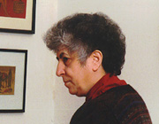

Samia A. Halaby, author of the program, directs the Kinetic Painting Group, selecting a theme and building the ideas. Still frames from the various works performed are available for fiewing in the themes page.
Halaby has worked with a variety of musicians using both acoustic and electronic instruments. She has worked extensively with multi-percussionist Kevin Nathaniel. Mr. Nathaniel prefers acoustic instruments many of which have an African origin. Another musician with whom Halaby has worked regularly is Hasan Bakr. Bakr works closely with Nathaniel and is equally absorbed by African based percussion instruments.
The Kinetic Painting Group is open in composition and open to new collaborations. Many guest artists have worked with the group. Dancers, poets, story tellers, and other musicians have at one time or another joined the group's performances. During the world premier of the work titled "Branching," recently performed at the Lincoln Center in New York City, two musician, a poet, a dancer, and the painter worked to create the multi-media performance. The history of performances is available.
The program in the C language is mainly used for performance; but it can also be used to create bit-map files of static paintings which can be printed.
Samia Halaby began writing programs which create moving paintings in 1983 using Logo. Her programs began to incorporate sound when she started using an Amiga in the mid eighties. She then used Basic and later C on an Amiga. She later explored visual basic. Her current program is written in C for an IBM compatible Personal Computer. Her own essay on how she took the steps to begin programming process is available.
Her Amiga programs ran in length for one to five minutes and produced sound. They were self contained pieces. In 1990 she began work on an interactive program which would allow for live performance with the with electronic musicians whom she often saw in Philadelphia at SCAN (Small Computers in The Arts Network). SCAN was also the place where she first showed her programmed electronic paintings.
The program is written as an instrument of artistic form and reflects a particular aesthetic. Traditionally ideas such as shading, flat color, or distribution patterns could not be stored in an instrument. But, due to computing, visual ideas can be given a concrete body. They can then be recalled and applied to each other or to a variety of sets of shapes, lines, colors, etc. They can be used as spontaneously as a brush can be dipped in a puddle of paint. It is as though a brush were to be loaded with ideas rather than with paint..
A concept in this program is the idea of motion independent of a viewer's location. The type of motion created by the passing of things in front of a lens as in film is entirely rejected in this work. The selection of abstraction is a consequence of this artistic point of view. Thus 3D animation is consciously rejected as an aesthetic choice. The abstract rhythm and motion one experiences in Kinetic Painting is closely related to the growth of things and their development. It presents the simultaneity of visual experience. In film its closest relative is time-lapse photography.
Certain artistic considerations imposed themselves on the painter due to the nature of the new digital media. As the idea of movement and rhythm in real time entered painting, then certain visual considerations had to be given to these attributes. Artistic ideas such as variation in brush size and comparative scale had to be extended to cover real time rhythm. Thus variation in the rhythm of occurrence became a new painting issue as did variation in speed. How a visual form appears came into question. Does it appear suddenly or will it slowly grow like a plant from a seed?
The process itself becomes the artistic expression. New questions for painting arose. Could a kinetic painting maintain a rhythmic beat as in music? Answers lay in the real world? What is the rhythm of visual focus as we walk through the world? Is there one rhythm in how we look and another in how we think about it?
The interaction with sound also enlightened this new artistic inquiry. The new paintings are cognizant of the unique relationship of sound and vision. We hear all around us simultaneously. We hear some things which we do not see and we see some things which are too far away to hear. This led the Kinetic Painting Group to consider other patterns than total synchronization of sound and image.
Conversely, the painterly material influences the musicians. Their work takes forms which rely on the nature of sight. As a result, continuous rhythms are often abandoned to create an incidence of sound which imitates vision. At times rhythmic shifts take place to reflect a shift in visual atmosphere.
In response to this creative search the artist divided the visual movements into several classes. Some movements reflect the smaller and faster parts of the visual field such as people walking and speeding vehicles. Others reflect the larger more stable areas such as the sides of buildings or the chunks of sky between them or the ground. Some movements reflect the softer moving shapes of nature such as foliage and water.
The computer's central role in the performance of Kinetic Painting stems from a particular aesthetic attitude. That being the utilization of media for its own maximum potential. Using one medium to imitate the traditions of another is rejected. This involves the rejection of programs which transform the computer into a tool which imitates a camera or which imitates a pencil or a brush with paint.
A basic drive behind the creation of this program is the search for the nature of the medium of the computer as it might be applied to painting. This artistic attitude required learning the basics of hardware and learning programming. Thus programming logic has become an intimate part of the form of kinetic painting.
="pointer-events:none;cursor:default;" href="http://www.art.net/">
![[Art on the Net]](/images/artnet_button.gif)